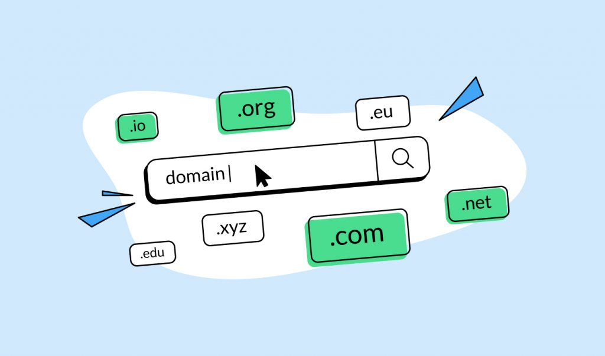
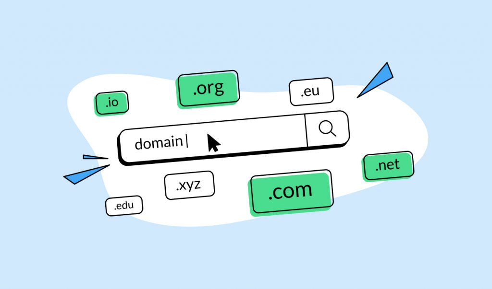

ICANN, Domain Names, & DNS
Internet Corporation For Assigned Names and Numbers, or ICANN is a non-profit corporation that is responsible for allocation IP addresses and managing the domain name system. Domain names serve as memorizable names for websites and other services on the Internet. However, computers access Internet devices by their IP addresses. DNS translates domain names into IP addresses, allowing you to access an Internet location by its domain name.
Every computer connected to the Internet, from servers to home PCs, has an IP address. However, it would be unrealistic for the ICANN to directly assign each computer an individual IP address. Instead, the ICANN allocates blocks of IP addresses to companies, educational institutions, and Internet service providers. These organizations then allocate IP addresses to computers that use their Internet connections.
Domain Name System associates names like www.example.com with the corresponding addresses, your computer uses the DNS to look up domain names and get the associated IP address which is used to connect your computer to the destination on the internet. DNS Servers are connected in a distributed hierarchy to avoid request-traffic on one server. DNS was created to be an open public communication protocol for governments and education institutions. But this means that it is susceptible to cyber attacks.
 
